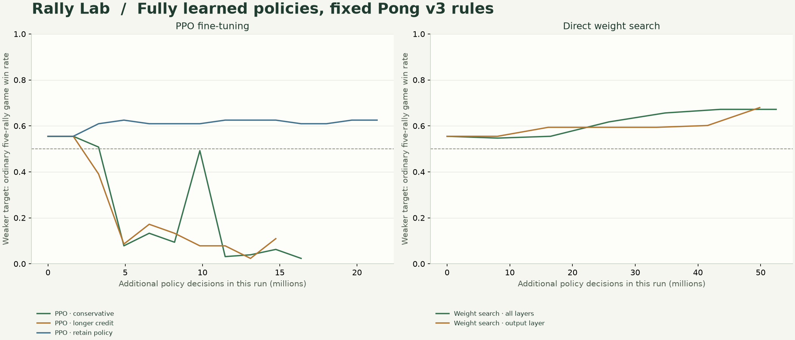

Historical study
Commands below refer to archived research sources, some retained only in the local experiment archive. They are not the maintained training workflow. Current play uses Classic v4.
PONG V3 · FULLY LEARNED POLICIES
Six inputs.
Learned decisions.
Same rules · No fixed trajectory calculations
The goal is a plain learned network that beats both original Selfplay v2 and the unchanged scripted attacker. Every affine weight and bias belongs to the trained policy. The submitted actor receives the six public observations and emits three action scores directly.
5Recorded training experiments
154.76MAdditional policy decisions across these runs
2 targetsOriginal v2 and scripted attacker
3 / 3Reserved final blocks evaluated
Result
The frozen fully learned export passes every predeclared criterion against both targets in all three reserved blocks.
Contender · 6→64→64→3 Tanh; all 4,803 affine parameters learned; no fixed trajectory calculations or action feedback. Selected before final testing from the same 512 fresh development seeds. Highest weaker-target ordinary-game win rate among the prior learned PPO baseline, two weight-search variants and the improved PPO continuation: 696/1024 (67.97%) against attacker and 920/1024 (89.84%) against v2. The interceptor mostly draws (164/1024 games won); this tradeoff is reported. Final test blocks are untouched at freeze.
4,803 learned parameters · 4,672 MACs per decision · 19,643 bytes · 5 ONNX operators. The serialized graph exactly matches the trainable MLP checkpoint. Fixed geometry and paddle-feedback parameters: zero.
Download standalone ONNX weights (retired)
| Opponent | Rally W / L / D | Rally draws | Five-rally games W / L / D | Game win rate | Paired contests W / L / D | Paired win rate |
|---|
| Original Selfplay v2 | 2360 / 70 / 3570 | 59.5% | 1086 / 5 / 109 | 90.5% | 594 / 0 / 6 | 99.0% |
| Scripted attacker | 1339 / 97 / 4564 | 76.1% | 822 / 23 / 355 | 68.5% | 540 / 5 / 55 | 90.0% |
| Interceptor guardrail | 199 / 66 / 5735 | 95.6% | 181 / 59 / 960 | 15.1% | 158 / 51 / 391 | 26.3% |
Drawn games count in every win-rate denominator. Ordinary games are the arena’s five-rally matches; paired contests combine both side assignments on the same five serves. These are two aggregations of the same trajectories, not extra independent samples. One frozen candidate was tested on these reserved blocks. The three blocks test the same chosen export; they are not three independent training runs.
| Block | Opponent | Rally W / L / D | Loop / timeout draws | Five-rally games W / L / D | Game wins | Paired contests W / L / D | Paired wins | Left W/L · right W/L | Point-margin 95% interval | Protocol |
|---|
| holdout-1 | Original Selfplay v2 | 773 / 27 / 1200 | 1135 / 65 | 365 / 3 / 32 | 91.2% | 198 / 0 / 2 | 99.0% | 387/15 · 386/12 | +35.2…+39.5 pp | Pass |
| holdout-1 | Scripted attacker | 446 / 38 / 1516 | 1516 / 0 | 279 / 10 / 111 | 69.8% | 179 / 1 / 20 | 89.5% | 224/20 · 222/18 | +18.6…+22.2 pp | Pass |
| holdout-1 | Interceptor guardrail | 63 / 25 / 1912 | 1548 / 364 | 58 / 24 / 318 | 14.5% | 51 / 23 / 126 | 25.5% | 31/13 · 32/12 | +0.9…+2.9 pp | Guardrail |
| holdout-2 | Original Selfplay v2 | 786 / 23 / 1191 | 1131 / 60 | 364 / 2 / 34 | 91.0% | 199 / 0 / 1 | 99.5% | 379/14 · 407/9 | +36.1…+40.2 pp | Pass |
| holdout-2 | Scripted attacker | 472 / 31 / 1497 | 1497 / 0 | 282 / 7 / 111 | 70.5% | 182 / 3 / 15 | 91.0% | 241/17 · 231/14 | +20.2…+23.9 pp | Pass |
| holdout-2 | Interceptor guardrail | 76 / 22 / 1902 | 1533 / 369 | 70 / 18 / 312 | 17.5% | 63 / 15 / 122 | 31.5% | 41/13 · 35/9 | +1.9…+3.6 pp | Guardrail |
| holdout-3 | Original Selfplay v2 | 801 / 20 / 1179 | 1125 / 54 | 357 / 0 / 43 | 89.2% | 197 / 0 / 3 | 98.5% | 404/7 · 397/13 | +37.0…+41.1 pp | Pass |
| holdout-3 | Scripted attacker | 421 / 28 / 1551 | 1551 / 0 | 261 / 6 / 133 | 65.2% | 179 / 1 / 20 | 89.5% | 205/13 · 216/15 | +17.8…+21.6 pp | Pass |
| holdout-3 | Interceptor guardrail | 60 / 19 / 1921 | 1532 / 389 | 53 / 17 / 330 | 13.2% | 44 / 13 / 143 | 22.0% | 35/7 · 25/12 | +1.2…+3.0 pp | Guardrail |
Acceptance is checked in every block against each primary target. Pooled totals are descriptive. The interceptor is a separately reported guardrail.
What “fully learned” means here
The policy is a conventional feed-forward Tanh MLP: learned affine layers and nonlinearities, with no engineered flight-time or landing-height features, fixed paddle-error feedback, opponent identifier, timer, planner or external action rule. Its exported graph is checked against the selected trainable checkpoint and the existing arena upload budget.
The starting weights follow this lineage: original learned v2 actor → terminal-only focused PPO → undiscounted focused PPO → the current training experiments. Original v2 used a supervised warm start followed by PPO. The current candidates inherit learned weights; they do not inherit the hybrid Strategist’s geometry network. The training-only critic may use opponent identity and time to estimate returns; those inputs never enter the exported policy.
The earlier hybrid Strategist remains an archived experiment. It included fixed trajectory calculations and does not satisfy this experiment’s fully learned requirement. Its results are not counted as success here. The earlier report retains the regression diagnosis and its separate evidence.
Learning curves and unsuccessful runs
These are raw development measurements of the weaker target’s ordinary five-rally game win rate. The dashed line is 50%, counting draws in the denominator. Crossing it on development data alone is not a final success claim.

| Run | Additional decisions | Selected checkpoint | Weaker game win rate | v2 games W / L / D | Attacker games W / L / D | Interpretation |
|---|
| PPO · conservative | 16,384,000 | update 0 | 55.5% | 99 / 17 / 12 | 71 / 19 / 38 | Stopped after 250 logged updates because attacker performance regressed; best remains initial policy. |
| PPO · longer credit | 14,745,600 | update 0 | 55.5% | 99 / 17 / 12 | 71 / 19 / 38 | Stopped after 225 logged updates because attacker performance regressed; best remains initial policy. |
| PPO · retain policy | 21,299,200 | update 175 | 62.5% | 112 / 3 / 13 | 80 / 14 / 34 | Sharper action sampling and stronger KL penalty against the learned starting policy. |
| Weight search · all layers | 52,475,112 | generation 25 | 67.2% | 114 / 1 / 13 | 86 / 6 / 36 | Thirty generations; perturbs all learned affine weights and biases. |
| Weight search · output layer | 49,854,626 | generation 30 | 68.0% | 101 / 9 / 18 | 87 / 9 / 32 | Thirty generations; inherited hidden weights remain learned, only output parameters are further optimized. |
Each table row uses its recorded selected checkpoint. PPO decision counts include critic warm-up. Search counts aggregate active decisions across tested population members. Counts cover completed logged checkpoints; they exclude earlier pretraining and any interrupted work after the last measurement, and are not elapsed-time comparisons. Failed and regressing runs remain visible.
PPO uses terminal point rewards, fixed opponents within each rally, conservative actor updates and a training-only value estimator. Deterministic weight search tests changes to learned MLP parameters against the actual greedy-deployment objective. Neither route adds a fixed geometric computation to inference. Sampled PPO training disables loop exits because a sampled action can escape a repeated position; deterministic evaluation uses the unchanged v3 loop rule.
Shared development comparison
The starting policy and candidate checkpoints below use the same 512 development seeds, all five serves and both sides. These results inform selection; they are not the reserved final tests. Selection targets v2 and the attacker. The interceptor is shown separately to expose specialization: a model can gain against both targets while turning wins against a passive defender into draws. Targeted improvement is not a claim of being universally stronger.
| Policy | Opponent | Rally W / L / D | Five-rally games W / L / D | Game win rate | Paired contests W / L / D |
|---|
| baseline | Original Selfplay v2 | 2085 / 464 / 2571 | 816 / 85 / 123 | 79.7% | 464 / 17 / 31 |
| baseline | Scripted attacker | 907 / 301 / 3912 | 526 / 129 / 369 | 51.4% | 342 / 63 / 107 |
| baseline | Interceptor guardrail | 1295 / 298 / 3527 | 660 / 83 / 281 | 64.5% | 401 / 29 / 82 |
| search-all-91 | Original Selfplay v2 | 2120 / 61 / 2939 | 920 / 9 / 95 | 89.8% | 508 / 0 / 4 |
| search-all-91 | Scripted attacker | 1121 / 94 / 3905 | 696 / 41 / 287 | 68.0% | 437 / 16 / 59 |
| search-all-91 | Interceptor guardrail | 186 / 53 / 4881 | 164 / 44 / 816 | 16.0% | 137 / 39 / 336 |
| search-output-93 | Original Selfplay v2 | 2785 / 727 / 1608 | 836 / 70 / 118 | 81.6% | 481 / 14 / 17 |
| search-output-93 | Scripted attacker | 985 / 219 / 3916 | 601 / 95 / 328 | 58.7% | 385 / 38 / 89 |
| search-output-93 | Interceptor guardrail | 1273 / 94 / 3753 | 750 / 36 / 238 | 73.2% | 445 / 12 / 55 |
| plain-ppo-retain-107 | Original Selfplay v2 | 2110 / 97 / 2913 | 904 / 16 / 104 | 88.3% | 508 / 1 / 3 |
| plain-ppo-retain-107 | Scripted attacker | 976 / 201 / 3943 | 590 / 83 / 351 | 57.6% | 389 / 36 / 87 |
| plain-ppo-retain-107 | Interceptor guardrail | 1029 / 191 / 3900 | 610 / 84 / 330 | 59.6% | 373 / 45 / 94 |
A stricter consistency test
The final protocol was reserved before evaluating a selected export. In each of three fresh blocks, against both primary opponents, it requires: more than half of ordinary five-rally games won; more than half of paired ten-rally contests won; a positive lower endpoint for the 95% seed-cluster point-margin interval; and more rally wins than losses separately on both physical sides. Draws remain in the game-win denominators.
Each block contains 200 dispersed seeds, 2,000 rallies per opponent and 400 ordinary games. Bootstrap resampling keeps both sides and all ten rallies for a seed together. These empirical criteria do not prove optimal play or give a family-wise statistical guarantee. Final testing runs the actual exported candidate and original v2 ONNX file through native ONNX Runtime, with deterministic first argmax. Published final seeds become historical evidence for future work.
Reproduce and inspect
Read training/results/fully-learned/README.md for exact training and evaluation commands. Run records, protocol, reserved seed lists, selection evidence and verification are retained under training/results/fully-learned/. Rebuild this report with .venv/bin/python training/scripts/plain_report.py. Earlier rules packages and model reports remain archived.
The selected graph exactly matches the plain trainable checkpoint: 4,803 learned parameters, zero fixed feature or feedback parameters. Native ONNX and PyTorch agree on 8,192 reachable observations. Six complete matches reproduce in the live TypeScript engine and browser WASM: 38,914 decisions, 19,481 frames, 22 loop draws and one timeout, all actions and physical states identical. Rules, validator, scripted attacker, v2 weights and standalone v1/v2/v3 packages remain unchanged.